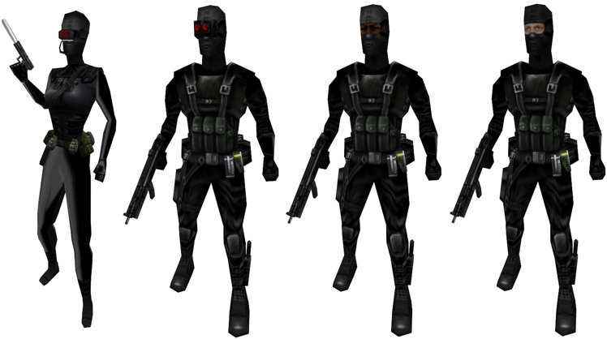
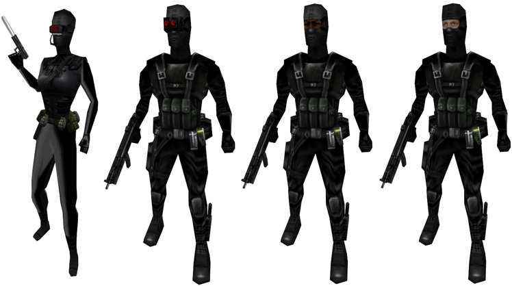
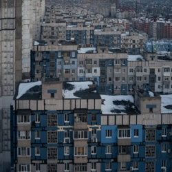

DATOS Y CURIOSIDADES
Datos cortos de half life
originalmente el protagonista no iba a ser gordon freeman sino que el protagonista seria ivan the space biker pero su aspecto se asemejaba con un vagabundo y no como un cientifico,
finalmente decidieron rebajarle el pelo ponerle una barba de candado y lentes de armazon negro y eventualmente lo nombraron "gordon freeman" en homenaje a el cientifico "freeman dyson" por manos de gabe newell.

para la creacion de half life se tomo prestado el motor quake engine y posteriormente se le hicieron grandes modificaciones conocido actualmente como el motor gold source engine siendo capaz de darle esos
graficos tan buenos para su epoca a half life mas adelante se le dio una lavada de cara al motor de half life creando el tan reconocido motor de valve el cual es conocido como source juegos como left 4 dead,
portal, team fortress 2,counter strike source, entre otros en la actualidad (2023) existe la segunda version de este motor llamado source 2 el cual es capaz de crear paisajes semirealistas y fisicas mas
complejas que el anterior source.
la historia de half life 1 esta inspirada en el libro de stephen king "the mist" a decir verdad estas historias parecen paralelas unas de la otra en the mist se confrontan a las criaturas en un mercado con un grupo de integrantes pequeño
mientras que en half life esto se ve desde un punto de vista directo y en el lugar de los sucesos.
dentro del casillero de freeman encontraremos 2 libros que existen en la vida real estos son libros escritos por marc laidlow estos son: "the orchid eater" y "the 37th mandala" dentro de los archivos del juego existe un tercer libro el cual
tiene por nombre "the third force" el cual no aparecera nunca en la partida no se sabe porque lo eliminaron del juego final.
desde la salida del juego muchos fans se preguntaron que a quien le pertenecian los trajes faltantes al lado del nuestro eventualmente una expansion exlusiva de playstation 2 lo resuelve la cual fue nombrada "HALF LIFE deacay" en la susodicha
encarnamos a colete green y gina cross las cuales tomaron los trajes horas antes que llegara gordon para tener listo el cristal de xen para el experimento.
un dato bastante corto es el de que los elevadores de black mesa de cuando nos caen headcrabs esta inspirado en el manga conocido como akira mas especifico en el volumen 1 se logra ver este elevador de forma bastante similar al del videojuego.
en la version alemana del juego los guardias y cientificos tienen una animacion bastante rara al morir estos tomaran asiento en el suelo y se desvaneceran algo similar ocurre con los soldados HECU que son remplazados por robots y en lugas de que sangren
estos solo derramaran aceite esto se debe a la ley de violencia en los juegos impuestos por alemania.
algunos objetos fueron desechados como la adrenalina,un antidoto, la caja de municion, una bengala, la mochila de oxigeno, la targeta de seguridad,etc.
algunos enemigos tambien fueron descartados de la version final los cuales son:el aflocks, archers, floaters, snapbug, chumtoad, kinpin y el tan conocido y retorcido mr friendly.

Parece ser que el puesto de trabajo de Gordon el sector 7G es una referencia a el lugar donde trabaja homero Simpson.
Cuando matamos a algún npc importante o realizamos una acción indebida para la historia nos saldrá una pantalla con un texto citando que hemos fallado con la misión esto se podría deber a que gman esta evaluando nuestras acciones durante todo el juego.
La primera expansión de este fue desarrollada por Gear box y publicado por Valve, en esta no controlamos a Gordon freeman puesto a que el título de el juego es una alusión a la tercera ley de Newton la fuerza opuesta, que el protagonista sea Adrián shepard sería logico puesto a que este representa a los soldados hecu los cuales intentaban matar a Gordon a toda costa.

En el manual de instrucciones de oposing force hay 5 notas de un diario que supuestamente pertenecen al cabo shepard y que fueron redactadas en su estancia en la base militar, dentro de estas se narra como es su estancia su entrenamiento y la presencia de un hombre de traje misterioso en la base.
En esta entrega se explora un poco más el lore de los alienígenas como la raza renegada denominada "raza x" y los comandos negros que en esta entrega se nota su antagonismo presente mientras que en half life 1 tienen apariciones efímeras.
 

Justo antes de que shepard escape con su equipo aparentemente gman le cierra la puerta hacía el punto de extracción,en el capítulo de nombre "el paquete" el cabo desactiva una una bomba termonuclear sin embargo más adelante vemos a gman reactivandola no se sabe que motivos tiene con el cabo.
Si ingresamos por el portal en el que entro freeman el cabo caerá al vacío y nos aparecerá un texto que dice "evaluación terminada" "sujeto intento crear una paradoja temporal,esto quizás se deba a que si el caboa asesina a freeman este no podrá derrotar a nigilanth .
El gonome hace su primera aparición en esta expansión no se sabe a que circunstancias debe estar expuesto el sujeto para lograr esta masa corporal.
Half life decay fue el único juego que fue exportado a PlayStation 2 junto con half life 1 este hace alucion a el término científico decaimiento exponencial, este juego solo estuvo disponible para PlayStation 2, en este título encarnamos a colette green y gina cross las cuales son los únicos protagonistas que pueden hablar destro del juego a diferencia de freeman, calhoun y shepard
Half life 2 salió un 16 de noviembre de 2004 siendo un juego de valve con criticas abrumadoramente positivas, tanto así que la obra de valve recibió 35 premios a juego del año en 2005.
El juego se ambienta en una cidad desconocida con arquitectura post sovietica en Europa del este conocida como "ciudad 17".

El dispositivo de viaje teletransportador está ligeramente inspirado en la máquina del filme la mosca, en uno de los dialogos de kleiner el menciona que probo el teletransportadorcon un gato y al parecer este no termino bien basicamente lo mismo que ocurrio en el filme.
Ir a la pagina:
1 2 3 4 5 6 7